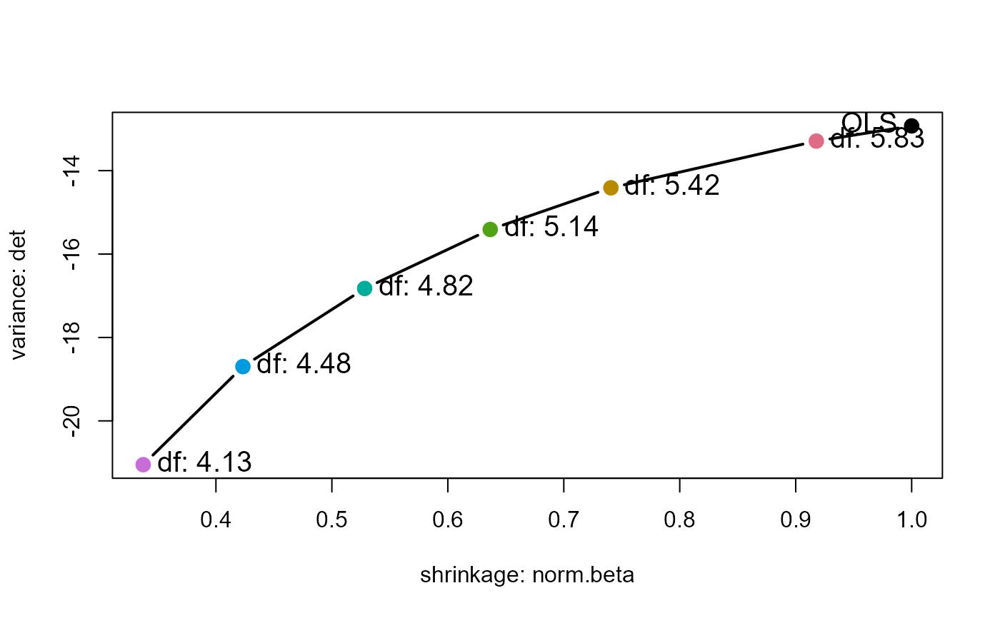

This function uses the results of precision to
plot a measure of shrinkage of the coefficients in ridge regression against a selected measure
of their estimated sampling variance, so as to provide a direct visualization of the tradeoff
between bias and precision.
Arguments
- x
A data frame of class
"precision"resulting fromprecisioncalled on a"ridge"object. Namedxonly to conform with theplotgeneric.- xvar
The character name of the column to be used for the horizontal axis. Typically, this is the normalized sum of squares of the coefficients (
"norm.beta") used as a measure of shrinkage / bias.- yvar
The character name of the column to be used for the vertical axis. One of
c("det", "trace", "max.eig"). Seeprecisionfor definitions of these measures.- labels
The character name of the column to be used for point labels. One of
c("lambda", "df").- label.cex
Character size for point labels.
- label.prefix
Character or expression prefix for the point labels. Not yet implemented.
- criteria
The vector of optimal shrinkage criteria from the
ridgecall to be added as points in the plot.- pch
Plotting character for points
- cex
Character size for points
- col
Point colors
- main
Plot title
- xlab
Label for horizontal axis
- ylab
Label for vertical axis
- ...
Other arguments passed to
plot.
Examples
lambda <- c(0, 0.001, 0.005, 0.01, 0.02, 0.04, 0.08)
lridge <- ridge(Employed ~ GNP + Unemployed + Armed.Forces +
Population + Year + GNP.deflator,
data=longley, lambda=lambda)
criteria <- lridge$criteria |> print()
#> kHKB kLW kGCV
#> 0.004275357 0.032295308 0.005000000
pridge <- precision(lridge) |> print()
#> lambda df det trace max.eig norm.beta
#> 0.000 0.000 6.000000 -12.92710 18.1189511 15.4191000 1.0000000
#> 0.001 0.001 5.829251 -13.29160 13.9320912 11.3430089 0.9178082
#> 0.005 0.005 5.415118 -14.41144 6.8209398 4.6064698 0.7406376
#> 0.010 0.010 5.135429 -15.41069 4.0422816 2.1806533 0.6365441
#> 0.020 0.020 4.818103 -16.82581 2.2180382 1.0254551 0.5282452
#> 0.040 0.040 4.477853 -18.69819 1.1647170 0.5807883 0.4232699
#> 0.080 0.080 4.127782 -21.05065 0.5873002 0.2599108 0.3372722
plot(pridge)
# also show optimal criteria
plot(pridge, criteria = criteria)
# use degrees of freedom as point labels
plot(pridge, labels = "df")
# show the trace measure
plot(pridge, yvar="trace")
